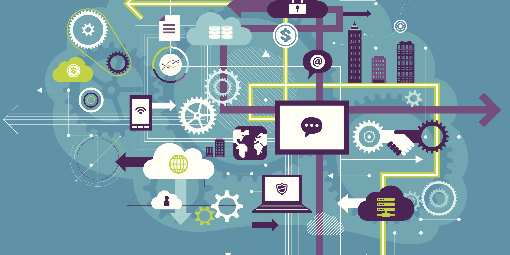

Internet de las cosas es una red de objetos físicos
"vehículos, máquinas, electrodomésticos y más"
que utiliza sensores y APIs para conectarse e intercambiar datos por internet.
Internet De Las Cosas potencia objetos que antiguamente se conectaban mediante circuito cerrado, como comunicadores, cámaras, sensores, y demás, y les permite comunicarse globalmente mediante el uso de la red de redes.
¿Qué hace posible IoT?

IoT depende de una serie integral de tecnologías como:
Las interfaces de programación de aplicaciones (API) que conectan los dispositivos a internet.
Otras tecnologías IoT clave son las herramientas de gestión de
Big Data, las analíticas predictivas, la IA y machine learning, la nube y la identificación por radiofrecuencia (RFID).
¿Cuándo estará entre nosotros?
Hemos visto que Apple y Google han dado algunos pasos discretos con tecnologías como
Home Kit y Android @Home, tal vez el internet de las cosas aún está muy prematuro para ser lanzado o las grandes industrias aún no se han decidido del todo a lanzarse; aunque en el sector privado podemos encontrar algunas de estas
tendencias.
La industrias de producción en masa:
Podemos ver cómo las grandes industrias automotrices como Mercedes Benz, Ford, Audi, por mencionar algunas, utilizan
maquinaria robotizada interconectada para producir en más cantidad manteniendo la calidad y reduciendo costos.
Control de infraestructura urbana:
Cada vez más las ciudades implementan esta tecnología que les permite monitorear el correcto funcionamiento de los sistemas como: control de semáforos, puentes, vías de tren, cámaras urbanas, etc.
Control ambiental:
Una de las áreas en las que está teniendo más éxito el Internet de las cosas, ya que permite acceder desde cualquier
parte a información de sensores atmosféricos, meteorológicos, y sísmicos, permitiendo una mejor planificación de evacuación.
Sector salud:
cada vez más clínicas y hospitales utilizan esta tecnología para monitorear a los pacientes que se encuentran internados.
En Conclusión.
Las ciudades y las empresas adoptarán cada vez más tecnologías inteligentes para ahorrar tiempo y dinero. Eso significa que las ciudades podrán automatizar, manejar de forma remota, y recopilar datos a través de kioscos de visitantes,
sistemas de vigilancia con cámaras de video, estaciones de alquiler de bicicletas y taxis, y un número creciente de funciones que ya se están desplegando en varias ciudades inteligentes a lo largo del MUNDO.